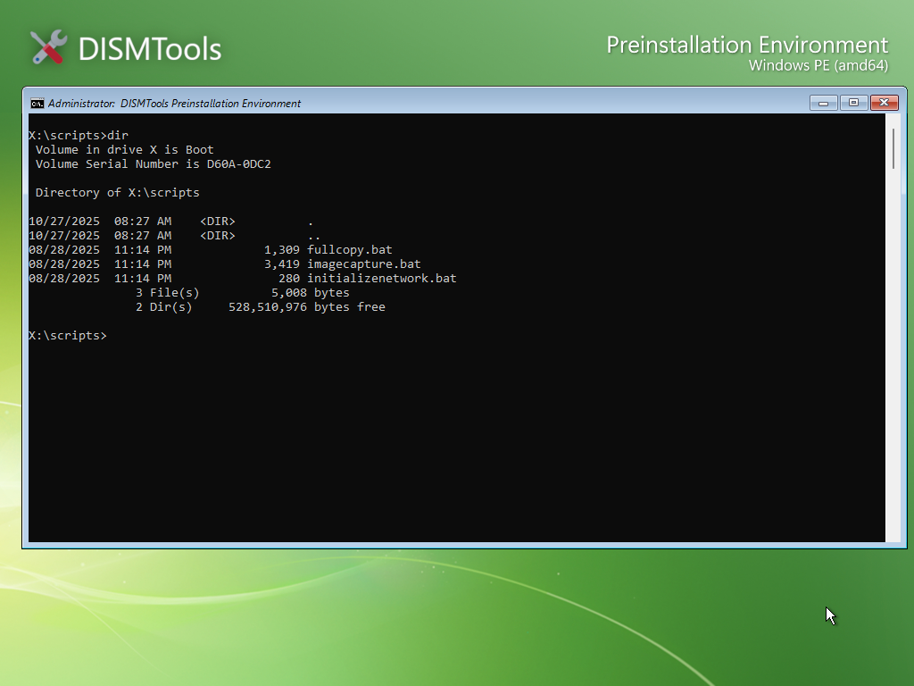

Preinstallation Environment Command-line Administration Script Reference
This page contains reference documentation for Administration Scripts included with the DISMTools Preinstallation Environment. You can access these by going to the scripts folder on the root of the boot drive (type cd \scripts to go there).

Available scripts
Currently, 4 scripts are included:
Initialize Networking (initializenetwork.bat)
This script initializes the networking stack in the Preinstallation Environment for use with network-ready applications, and also enables the firewall.
Full Disk Copy (fullcopy.bat)
This script performs a full disk copy from one disk to another with robocopy.
Usage:
- Enter the source drive letter
- Enter the destination drive letter
- Wait for the process to complete
Capture Image (imagecapture.bat)
This script captures a Windows system drive into a WIM file that can be used later. In DISMTools 0.7.2 and later, this tool can be launched automatically after Sysprep completes, using the Sysprep Preparation Tool.
Usage:
- Enter the source drive letter (the Windows installation to capture), or an action to perform:
- Type
DIMto run the Driver Installation Module in case you don't see your drives - Type
NETto map a network share in the environment. If successful, it will be used as the destination for the WIM file automatically - Type
WDSto run the WDS Image Capture wizard. This will let you upload the captured image directly to a WDS server
- Type
- Enter the destination drive letter (where to save the WIM file)
- Enter the WIM file name (for example,
install.wim) - Enter the image name (for example,
Windows 11 Pro) - Wait for the process to complete
After DISM completes, you will see a result screen.
Create Boot Files (createbootfiles.bat)
This script allows you to reconfigure a disk to make it bootable by copying the boot files of the installation to its System Reserved partition (MSR) or EFI System Partition (ESP), based on the firmware type that you pass to it as an argument.
Usage:
-
Pass one of the following values as an argument:
Value Operating mode BIOS,MBR,LEGACYLegacy mode UEFI,GPTUEFI mode
Once the script launches:
- Provide the number of the source disk
- Provide the number of the destination MSR/ESP partition in the selected disk
- Provide the letter of the volume to copy boot files from
- Wait for the tool to do its work, and restart the computer